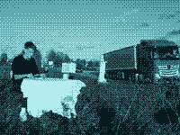
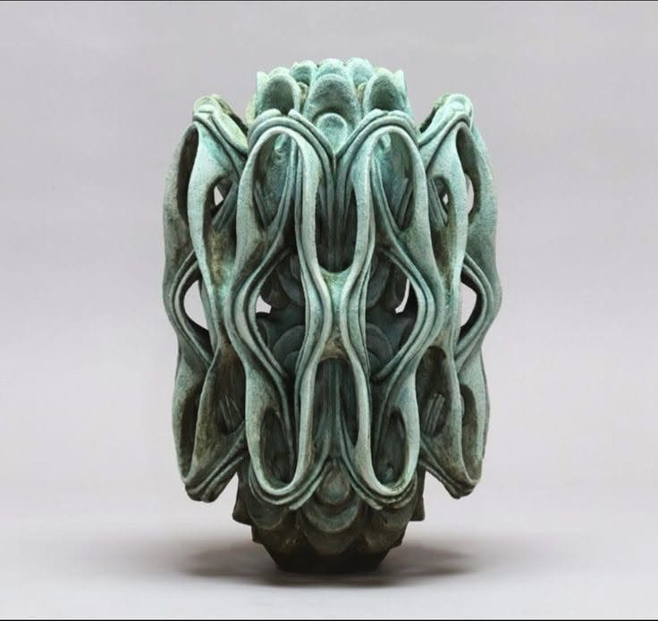

Unité
TL-01

- Désignation
- ALTERTOPIE
- Année
- 2022
- Médium
- —
- État
- —

Ma démarche interroge les relations que l'humain entretient avec son environnement, qu'il soit naturel, construit ou médiatisé par des systèmes techniques. Je m'intéresse aux zones de tension entre le naturel et l'artificiel, aux traces du passé, aux dynamiques présentes et aux projections futures qui se superposent dans nos paysages.
| N° | Désignation | Année | Médium | État |
|---|---|---|---|---|
| 01 | ALTERTOPIE | 2022 | Vidéo, performance filmée · 3 min 12 | SÉLECTIONNÉ |
| 02 | COSSERAT, manufacture du vide | 2022 | Vidéo 360° | ARCHIVÉ |
| 03 | Nature 404 | 2023 | Installation immersive | ARCHIVÉ |
| 04 | PARASITE #1 | 2024 | Sculpture · tronc, argile crue | ARCHIVÉ |
| 05 | U | 2024 | Sculpture · verre à l'uranium, lampe UV | ARCHIVÉ |
| 06 | Compagnon 1 | 2026 | Installation sculpturale, vidéo | EN COURS |
| 07 | O.M.A (One Meter Array) | 2026 | Installation sculpturale | EN COURS |
Unité
TL-01
